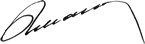

Yönetim Kurulu Başkanı'nın Mesajı
Ziraat Bankası'nın zaman içinde inşa ettiği engin deneyim ve bilgi birikimi onu sektörün doğal bir lideri konumuna getirmiştir.
Muharrem KARSLI
Yönetim Kurulu Başkanı
Değerli paydaşlarımız,
150. yılımızda, ilk Sürdürülebilirlik Raporumuzu sizlerle paylaşmanın gurur ve onurunu ekip olarak yaşıyoruz.
Her koşulda paydaşlarını düşünen, onlar için en yüksek değeri üretmek hedefiyle faaliyetlerini sürdüren Ziraat Bankası, geride bıraktığı 1,5 asırlık zaman diliminde gerek ülkemizin gerekse dünyanın içinden geçtiği tüm zorlukları başarıyla aşmıştır. Tarihe tanıklık etmiş, Osmanlı İmparatorluğu’nun son döneminden Cumhuriyet’e uzanan yolda ekonomik ve toplumsal gelişmeye kılavuzluk ederek her zaman halkın yanında yer almış ve destek vermiştir.
Ziraat Bankası’nın zaman içinde inşa ettiği engin deneyim ve bilgi birikimi onu sektörün doğal bir lideri konumuna getirmiştir.
Bugün yaklaşık 25 bin kişiye istihdam sağlayan ve Türkiye çapında 400 ilçe ve beldede “tek finansal hizmet sağlayıcı” olarak hizmet sunan Ziraat Bankası, geleceğe küresel ölçekte bir oyuncu olarak hazırlanmakta ve kararlı adımlarla yoluna devam etmektedir.
Sorumluluğumuz, paydaşlarımız, sürdürülebilirlik ve Ziraat Bankası
Bulunduğumuz noktadaki temel sorumluluğumuzun, gelecek kuşaklara yaşanabilir bir dünya ve sürdürülebilir bir gelecek bırakmak olduğunun bilincindeyiz. Bu sebeple, sürdürülebilirliği geleceğin inşasında bizlere yol gösterecek temel unsurlardan biri olarak kabul ediyoruz.
Ziraat Bankası, geniş ve yaygın bir paydaş kitlesine sahiptir. Hissedarımız, çalışanlarımız, müşterilerimiz ve tedarikçilerimiz ana paydaş grubumuzu oluştururken düzenleyici kurumlar, uluslararası banka ve yatırımcılar, medya, sektörel birlik ve toplum günlük iletişim içinde olduğumuz aktörlerdir.
Faaliyetlerimizi paydaşlarımız ile işbirliği, saygı ve denge içinde yürütmeye odaklıyız ve bunu sürdürülebilirlik adına önemsiyoruz.
Bize göre sürdürülebilirlik, paydaşlarımızın, bugün olduğu gibi gelecekte de ihtiyaçlarını eksiksiz karşılayabilecekleri ekosistemi yaşatabilmektir.
Sürdürülebilirlik yalın bir ilkeye dayanmaktadır. Sürdürülebilirlik, insanın ve doğanın üretken bir ahenk içinde var olması için gereken koşulları ortaya koymakta, bizlerin olduğu kadar gelecek nesillerin de sosyal, ekonomik ve toplumsal gereksinmelerini karşılamalarına imkan sunmaktadır.
Bu kapsamda son yirmi yıldır dünya gündeminin ön sıralarına yerleşmiş bulunan iklim değişikliği, düşük karbon ekonomisine geçiş ve toplumsal kalkınma konularını öncelikli birer gündem maddemiz olarak kabul ediyor ve hizmet döngümüz kapsamındaki çalışmalarımızla bu alanlarda pozitif fark üretmeyi nihai bir hedef olarak benimsemiş bulunuyoruz.
Günümüzde şirketlerin büyümeleri ve kârlılıklarını “sürdürülebilir” hale getirmeleri için, yaşadıkları toplumun ve çevrenin geleceğini gözetmeleri, bu konuda iyileştirici ve geliştirici aksiyonlar almalarının gereğine yürekten inanıyoruz.
Ekolojik ayak izimizi yönetmeye ve küçültmeye büyük önem veriyoruz.
Sektörümüzün çevre üzerindeki etkilerinin başka iş kollarına oranla görece düşük olduğunu biliyoruz. Buna karşılık, en küçük bireysel çabanın dahi küresel hedeflere ulaşmada önem taşıdığının bilinciyle hareket ediyor; enerji ve su sarfiyatımız başta olmak üzere çevreye etkilerimizi ve doğal kaynak kullanımlarımızı doğru ve etkin bir yaklaşımla yönetmeye odaklanıyoruz. Diğer taraftan ürün ve hizmetlerimiz eksenlerinde sürdürülebilirliğin prensiplerini özenle uygulamaya; paydaşlarımıza kılavuzluk edecek, sektörümüze en iyi uygulama örneği oluşturacak ve ilham verecek projelere imza atmaya, özetle sürdürülebilirlik alanında da rol model olmaya adayız.
Ziraat Bankası, 150 yıldır olduğu gibi bugün ve yarın da eşsiz bilgi birikimi ile değişen dünyanın önceliklerini doğru yorumlamaya ve gerekli aksiyonları almaya devam edecektir. Sürdürülebilirliğin tüm eksenlerinde gücümüzü ve katkımızı artırmaya kararlıyız ve bu konuda gerekli olan kurumsal kapasiteye sahibiz.
Çalışanlarımızın rolü
Başarımızın merkezinde her zaman çalışanlarımız yer almıştır. Çalışanlarımızın, sürdürülebilirlik konusunda da aktif rol almaya başladıklarını izliyor ve bundan büyük memnuniyet duyuyoruz.
2014 yılında ilan ettiğimiz sürdürülebilirlik politikamızın tam olarak hayata geçirilmesi ve nihai hedefimiz olan Ziraat Finans Grubu’nda yaygınlaştırılması, ekibimizin güçlü katkıları ve çabaları ile mümkün olacaktır. Bu noktada çalışanlarımızı sürdürülebilirliği kurumsal bir hedefin ötesinde bir hayat şekli olarak algılamaya, benimsemeye ve çevrelerinde birer rol model olmaya davet ediyorum.
25 bine yakın çalışanımız, aile ve sosyal yaşamlarında üstlenecekleri küçük roller ile arzuladığımız geniş toplumsal etki alanını yaratmamıza büyük katkıda bulunacaklardır. Ziraat Bankası’nın hedefi, çalışanlarını sürdürülebilirlik konusunda daha da motive etmek ve gönüllü katılımlarını teşvik etmektir.
Ziraat Bankası’nın sürdürülebilir geleceği
Büyüme yol haritasını Türkiye’nin orta ve uzun vadeli vizyon ve hedeflerine uygun olarak belirleyen Ziraat Bankası, geleceğe emin adımlarla ilerlemeyi sürdürmektedir.
150 yıldır “bir bankadan daha fazlası” olmayı başaran Ziraat Bankası, orta ve uzun vadeli gelecekte de rakipsiz hizmet kalitesi ve çeşitlendirilmiş hizmet ve dağıtım kanalları ile her segmentten milyonlarca müşterinin öncelikli tercihi olmaya ve kalıcı değer üretmeye devam edecektir.
Kurumsal sürdürülebilirliği, yukarıda özetlediğimiz hedeflerimize ulaşmak için temel bir araç olarak görüyoruz. Sürdürülebilirliği, aynı zamanda geleceğin piyasa koşullarında rekabet edebilmek ve küresel bir oyuncu olarak varlığımızı devam ettirebilmek adına nihai bir amaç olarak da benimsemiş bulunuyoruz.
Liderliği ve sorumluluğu başarıyla dengeleyerek 1,5 asrı geride bırakan Bankamız, müşterisinin teveccühü, çalışanlarının tercihi ve tedarikçilerinin uzun soluklu işbirliği ile sektörünün en itibarlı şirketi ve Türk bankacılık sektörünün gurur kaynağı olmayı sürdürecektir.
Mesajıma son vermeden önce tüm paydaşlarımızı açık iletişime ve işbirliğine davet etmek istiyorum. Unutmayalım ki bugünün ve geleceğin ihtiyaçlarını eksiksiz karşılayabileceğimiz ekosistemi ancak birlikte çalışarak yaşatabilir ve geliştirebiliriz.
Gerek Ziraat Bankası’nın sürdürülebilirlik performansı gerekse ortaklaşa ele alabileceğimiz konular hakkındaki geri bildirimlerinizi surdurulebilirlik@ziraatbank.com.tr adresine iletmenizi bekliyoruz.
Ziraat markasına güveniniz, katkınız, desteğiniz ve tercihiniz için şahsım ve Yönetim Kurulumuz adına şükranlarımı sunarım.
Saygılarımla,

| www.ziraatbank.com.tr | İletişim |  |
T.C. Ziraat Bankası A.Ş. Copyright ©2015 |